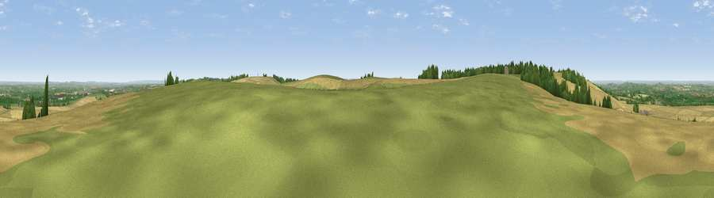

Hackpen Hill
#13549 in England · top 15% of its area beats it · near Letcombe BassettThe view, rendered

A 360° render of this exact spot computed from the terrain model, tree cover and land cover — summer colours, afternoon light, calibrated against photographs of famous viewpoints. Real trees, hedges and buildings will differ in detail.
The panorama
Grey silhouette: terrain skyline in each direction (720 bearings, Earth curvature and refraction included). Dashed green: skyline with trees (+15 m) and buildings (+8 m) as obstacles. Blue strip: how far the ground is visible on each bearing.
Where the view opens
Wedge length = distance to the farthest visible ground on that bearing (vegetation-aware). Rings at 10, 25 and 50 km.
What fills the view
56% cropland · 34% grassland · 9% woodland · 2% built-up
Angular shares of the visible panorama (visual magnitude), not map area. Landscape diversity 0.42 (0–1 Shannon).
Key numbers
More beautiful places nearby
The staircase of upgrades: each row has a higher view potential than everything closer. Driving times are estimates from straight-line distance, calibrated against real road routing — check an actual route before setting out.
| Place | Direction | Drive | Score |
|---|---|---|---|
| Seven Acre Hill | WNW · 1 km | ~3 min | 66.6 |
| Viewpoint near Kingston Lisle | WNW · 4 km | ~9 min | 68.5 |
| Viewpoint near Woolstone | WNW · 5 km | ~11 min | 70.9 |
| Viewpoint near Woolstone | WNW · 5 km | ~12 min | 76.7 |
| Martinsell viewpoint | SW · 27 km | ~44 min | 77.3 |
| Viewpoint near Leckhampton | NW · 52 km | ~73 min | 77.8 |
| Viewpoint near Great Witcombe | WNW · 54 km | ~76 min | 80.5 |
| Nottingham Hill | NW · 57 km | ~79 min | 80.9 |
51.56521, -1.49475 · source: osm peak · position refined by local search. Computed location — check access rights before visiting.